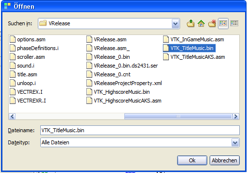

add a file to the project
Arkos tracker music conversion and play code is generated in vedi, using the popup on the project file tree. By chosing the entry "Arkos Tracker bin" the dialog is displayed (see also the vedi->Arkos Tracker documentation).
The popup menu is always activated but can only be successfully executed when an arkos tracker bin file is selected (the signature of the file is tested) in the current project. You have to download (or create) files befor you can convert them.
If you have a file available, you can easily add the file to your project. Place the mousecursor over the project name and press the right mouse button.

add a file to the project
Chose "add file"... and navigate in the resulting file choser to the file of your desire.

add a bin file
By chosing a file - the file is copied to the project directory and is NOW available.

build vectrex bin
Selecting "Arkos Tracker bin" converts the bin files directly.
You will be asked to enter a LabelId:

Label ID
This needs to be a unique identifier - in case you plan to use more than one Arkos Tracker score within your program. This ID is added to all generated labels.
The sources will be created in the current project directory.
(The name of the generated sources are derived from the chosen file. In the following it is assumed that the name given is "VTK_TitleMusic.bin".)
The generated sources are accompanied by an example Arkos tracker player routine.
Following sources are generated:
arkosPlayer.i
the subroutines to play the music
VECTREX.I
which is needed by the source
VTK_TitleMusicAKS.asm
a file with the actual data
VTK_TitleMusicMain.asm
a "main" file, with an example vectrex runnable "cartridge" file
A vectrex playable binary file can be generated by setting the generate "VTK_TitleMusicMain.asm" file as the main file in the project.

Arkos player
The actual play routines are documented in the source code, for the format of tracker files look at the documentation of the Arkos Tracker (downloadable at: http://www.julien-nevo.com/arkos/arkostracker1/).

example main

track data

Arkos player example